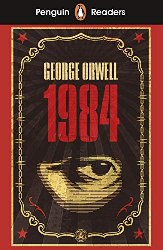
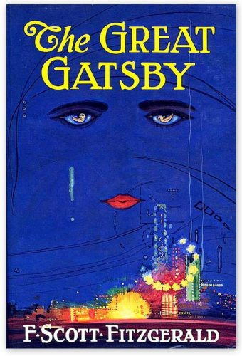
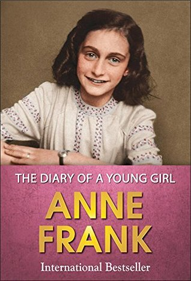
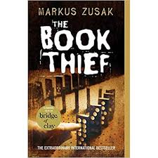

Reading a book is a good hobby but most of us are confused which books to read so here are some good reads !!
To Kill a Mockingbird is a novel by Harper Lee published in 1960. Instantly successful, widely read in high schools and middle schools in the United States, it has become a classic of modern American literature, winning the Pulitzer Prize. The plot and characters are loosely based on Lee's observations of her family, her neighbors and an event that occurred near her hometown of Monroeville, Alabama, in 1936, when she was ten.

Nineteen Eighty-Four: A Novel, often published as 1984, is a dystopian novel by English novelist George Orwell. It was published on 8 June 1949 by Secker & Warburg as Orwell's ninth and final book completed in his lifetime. Thematically, Nineteen Eighty-Four centres on the consequences of government over-reach, totalitarianism, mass surveillance, and repressive regimentation of all persons and behaviours within society. More broadly, it examines the role of truth and facts within politics and their manipulation.
Harry Potter and the Philosopher's Stone is a fantasy novel written by British author J. K. Rowling. The first novel in the Harry Potter series and Rowling's debut novel, it follows Harry Potter, a young wizard who discovers his magical heritage on his eleventh birthday, when he receives a letter of acceptance to Hogwarts School of Witchcraft and Wizardry. Harry makes close friends and a few enemies during his first year at the school, and with the help of his friends, Harry faces an attempted comeback by the dark wizard Lord Voldemort, who killed Harry's parents, but failed to kill Harry when he was just 15 months old.

The Lord of the Rings is an epic high-fantasy novel written by English author and scholar J. R. R. Tolkien. The story began as a sequel to Tolkien's 1937 fantasy novel The Hobbit, but eventually developed into a much larger work. Written in stages between 1937 and 1949, The Lord of the Rings is one of the best-selling novels ever written, with over 150 million copies sold.

The Great Gatsby is a 1925 novel written by American author F. Scott Fitzgerald that follows a cast of characters living in the fictional towns of West Egg and East Egg on prosperous Long Island in the summer of 1922. Many literary critics consider The Great Gatsby to be one of the greatest novels ever written.
The Diary of a Young Girl, also known as The Diary of Anne Frank, is a book of the writings from the Dutch language diary kept by Anne Frank while she was in hiding for two years with her family during the Nazi occupation of the Netherlands. The family was apprehended in 1944, and Anne Frank died of typhus in the Bergen-Belsen concentration camp in 1945. The diary was retrieved by Miep Gies, who gave it to Anne's father, Otto Frank, the family's only known survivor, just after the war was over. The diary has since been published in more than 60 languages.
By her brother's graveside, Liesel's life is changed when she picks up a single object, partially hidden in the snow. It is The Gravedigger's Handbook, left behind there by accident, and it is her first act of book thievery. So begins a love affair with books and words, as Liesel, with the help of her accordian-playing foster father, learns to read. Soon she is stealing books from Nazi book-burnings, the mayor's wife's library, wherever there are books to be found. But these are dangerous times. When Liesel's foster family hides a Jew in their basement, Liesel's world is both opened up, and closed down. In superbly crafted writing that burns with intensity, award-winning author Markus Zusak has given us one of the most enduring stories of our time.
